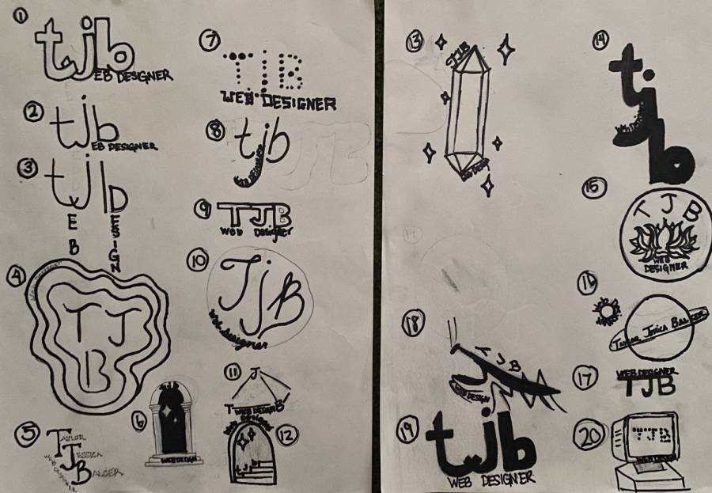
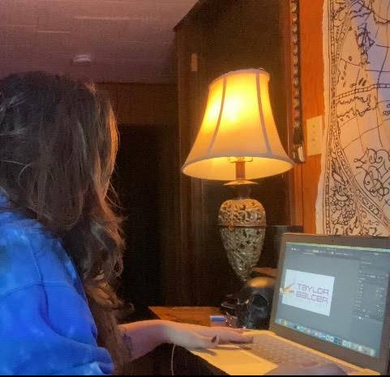
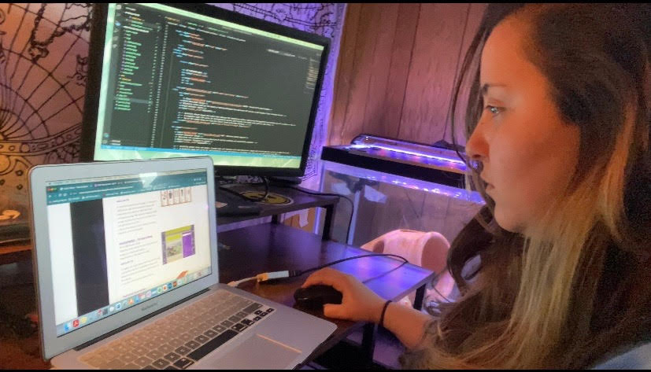

CASE STUDY
Hi everyone. This is Taylor. I thought I'd give you some insight into the problem-solving process I use when I approach a project, by sharing with you how I developed this very site. The task I faced was to create a brand and portfolio website to showcase my web design skills and let potential clients get into contact with me.
1. Ideate
In the Ideation phase I get to turn my imagination loose, exploring various possibilities for planning for the logo, color scheme, text and how the pages would be structured. The tools I used to refine my ideas in this case included sketching and styled wireframes. I sketched some ideas for my personal idenity logo, then I had the difficult task of choosing one to bring to life with Adobe Illustrator. After getting some opinions from colleagues in industryI chose the perfect logo for me, then re-created and colorized my logo in Illustrator. Once the logo was finished, I carefully and consistenley incorporated it into promotional materials, such as my resume, business card, etc. After finalization, I then created some stylized wireframes which helped me start creating the structure of my portfolio website with HTML/CSS.
2. Prototype
Prototypes of my logo, resume, reference page, business card and portfolio website were created so that I could have some memebers of my target audience try it out and give me their impressions.
3. Test
I prompted various target users to test the website. I had them narrate their interaction with it, which allowed me to identify items needing to be corrected in order for the app to better function.
Testing revealed that I should make the following improvements:
- Use better placement and spacing of text on the About pagepage for both desktop and mobile
- Improve the text color to be more readable
- Find better ways to showcase extra images without taking too much space, instead of just providing a link to an image/pdf.